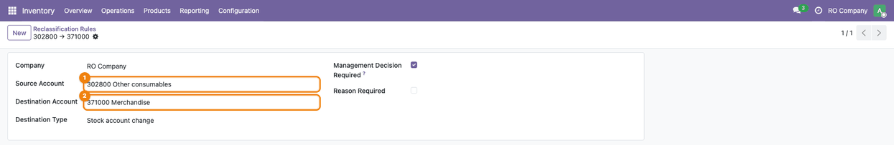
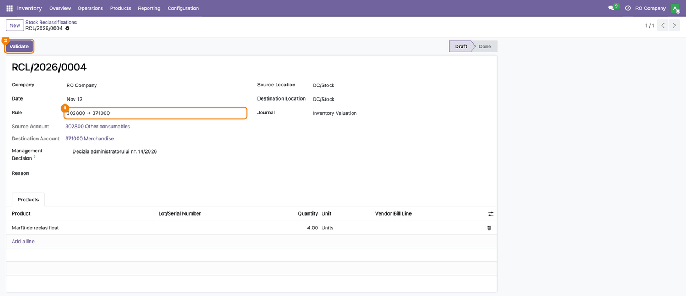
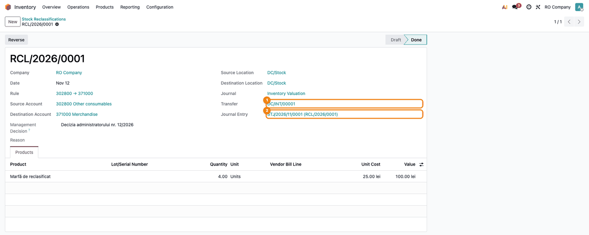
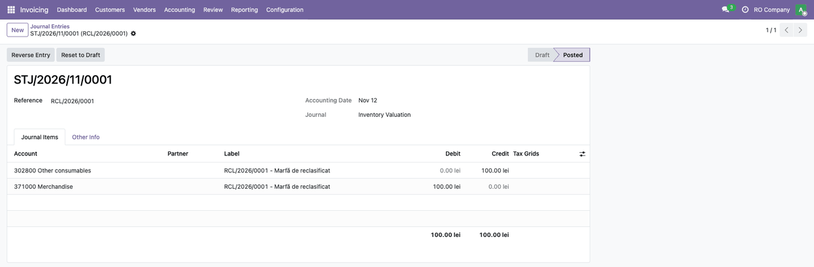
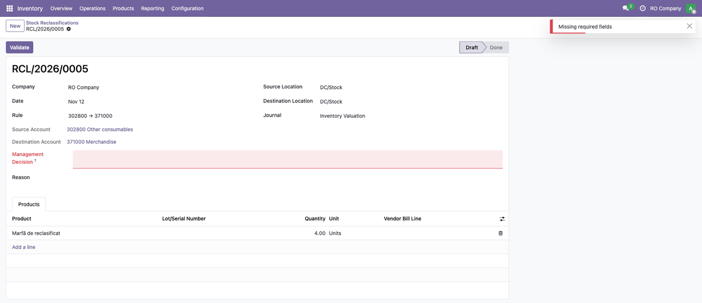
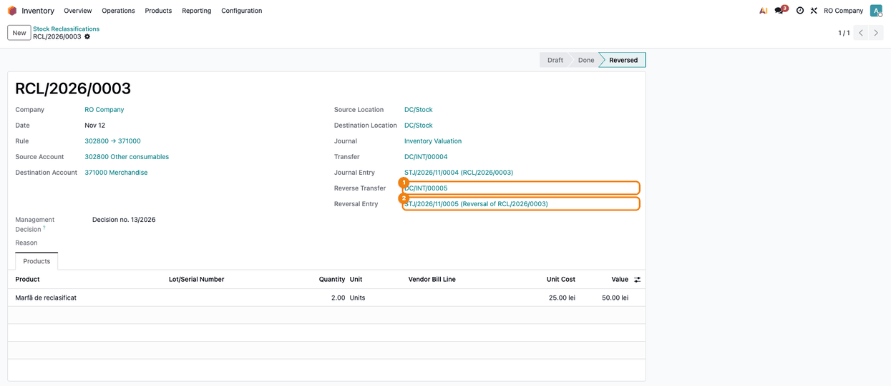

More apps by Terrabit
Other modules from the same publisher, built to work together. All apps →
Move stock between accounts with a document, a transfer and a journal entry
Moves stock from one account to another with a document of its own: a rule says which pairs of accounts are allowed, the document records the source and destination locations and the products, and its validation creates the stock transfer and posts the journal entry between the two accounts at the cost of the goods.
The document keeps the history (who, when, what, from which account to which), links the transfer and the journal entry, and can be reversed, with a reverse transfer and a reversal entry. Access is limited to a dedicated group.
Open Inventory → Operations → Reclassification Rules and create a rule for each reclassification you accept: the Source Account, the Destination Account and, optionally:
The pair of accounts is unique per company and the two accounts must differ. No rule is delivered with the module: each company creates the pairs it needs (for example 3028 → 371).

Open Inventory → Operations → Reclassifications and create a document:

Press Validate. The module checks the rule, the decision and the reason, the lots and serial numbers and the stock available in the source location, then:
The document moves to Done and links the Transfer and the Journal Entry.

Open the Journal Entry from the document: it is posted on the chosen journal, with the reference of the document. It debits the destination account and credits the source account at the cost of the goods.

When the rule asks for the Management Decision (or the Reason), the field is required on the document. If it is empty, Validate does not go through: the field turns red and the message Missing required fields appears. Fill in the field and validate again.

Reverse on a validated document does a reverse transfer (from the destination location back to the source one, with the same products and serial numbers) and posts a reversal entry: the same amounts with the accounts swapped (Dr source account / Cr destination account), dated today, in positive amounts. If the stock in the destination is no longer enough, the reversal is refused. A draft document has no transfer or entry: delete it. A validated document cannot be deleted, only reversed. Reverse it only from the document, not with Reverse Entry on the journal entry: that button does not reverse the transfer, so the document and the entry would no longer match.

Two groups control the module: Reclassifications (create and validate documents) and Reclassification Configuration (manage the rules). The Reclassification Rules menu (under Inventory → Operations) is visible only to the second one.
l10n_ro_stock_gestiune installed, the entry of a document with one line is also set as the inter-warehouse transfer entry of its move, so that the stock sheet per warehouse or location shows the source account on the source and the destination account on the destination (it needs l10n_ro_stock_gestiune 19.0.3.1.8 or newer, which does not post its own transfer entry for these moves). The sheet pairs the entry with the move without looking at the product, so a document with several lines does not write it: its entry would be repeated for every move.skip_stock_valuation_entry (it needs deltatech_obyc 19.0.1.0.23 or newer when both are installed).Our 600+ apps on the Odoo Apps Store are used in Odoo implementations across Europe, the Americas, Asia and Africa — by companies we have never even met. That is the advantage of building modules that simply work.
Questions about this module, or need it adapted to your processes? Write to us — the developers who build it will answer.
Terrabit support →Other modules from the same publisher, built to work together. All apps →